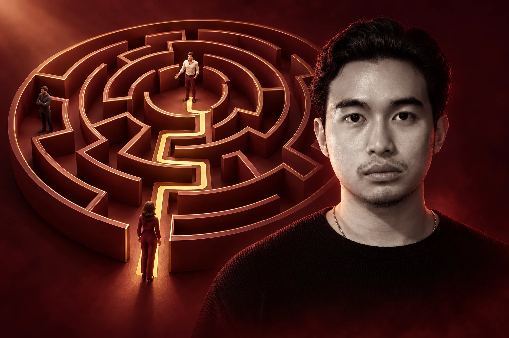

Kamu suka dapet orang yang salah.
Awalnya keliatan baik banget, terus baru keliatan aslinya: ngilang pas ada masalah, controlling, atau cuma mau enaknya doang. Dan polanya kok keulang terus?

Nicholas Kristianus · Nychothesis
Awalnya keliatan baik banget, terus baru keliatan aslinya: ngilang pas ada masalah, controlling, atau cuma mau enaknya doang. Dan polanya kok keulang terus?
Circle kamu itu-itu aja, dating app isinya basa-basi yang ga ke mana-mana. "Cowo yang bener tuh pada ke mana sih?"
Udah ngobrol enak, udah ngerasa nyambung, terus dia pelan-pelan dingin. Ujung-ujungnya kamu nyalahin diri sendiri.
Kalo salah satunya kerasa familiar: ini BUKAN karena kamu kurang beruntung, melainkan karena ada hal-hal yang ga pernah diajarin ke kamu. Dan semuanya bisa dipelajarin.
Dulu, banyak orang nikah sama orang yang tinggalnya cuma beberapa blok dari rumahnya. Sekarang kamu bisa kenal siapa aja lewat satu layar, dan efek sampingnya nyata: pilihan berasa ga ada abisnya, kamu terus ngebandingin (dan dibandingin), dan semua orang merasa punya banyak opsi.
Yang cowo bilang dia mau sama yang beneran dia butuhin deep down sering beda jauh. 🔎 Misal, banyak cowo yang tertarik sama kamu, tapi mundur diem-diem karena ngerasa dirinya belum mapan.
Kenapa tipe yang sama terus yang nyantol? Kalo ini ga dibongkar, kamu bisa ganti orang sepuluh kali, tapi ceritanya tetep sama.
Kabar baiknya: tiga-tiganya bisa dipelajarin. Dan itu yang gw susun di Love, Not Luck.
Amankan harga pre-orderProgram buat cewe yang mau narik cowo yang tepat dan ga salah pilih, tanpa harus jadi orang lain, main tarik-ulur, atau nunggu keberuntungan.
Yang bikin Love, Not Luck beda:
Materi lengkapnya lagi gw susun, tapi ini yang pasti kamu bawa pulang:
Jadwal rilis: [JADWAL RILIS]
Amankan harga pre-orderUdah makan belum? Jangan telat makan ya 🥺
Ngobrol sama kamu tuh nyambung banget
Besok aku jemput ya, mau ke mana aja aku temenin
Beneran tertarik, atau cuma jago di awal?
Duluada cowo yang chat-nya manis banget di minggu pertama, dan kamu langsung baper.
Sekarangkamu bisa bedain mana yang beneran tertarik, mana yang cuma jago di awal.
Duluada yang pelan-pelan dingin, dan kamu semaleman mikirin salah kamu di mana.
Sekarangkamu ngerti, ga semua yang mundur itu karena kamu kurang.
Dulutipe yang sama terus bikin kamu nyantol.
Sekarangkamu sadar polanya sebelum ceritanya keulang.
Duluada cowo baik yang menarik buat kamu, tapi kamu cuma diem nunggu dia gerak.
Sekarangkamu bisa membuka percakapan dan menunjukkan ketertarikan dengan tetap menjaga batasan kamu.
Dulukamu ngerasa harus jadi orang lain biar dilirik.
Sekarangkamu tau pilar mana yang udah kamu kembangin, dan cowo yang tepat bakal ngeliat itu. Siap-siap aja ada yang kelepek-kelepek :p
Dulukamu bisa milih karena takut sendirian atau udah kelamaan nunggu.
Sekarangpas ada yang serius, kamu milih dia karena dia emang tepat.
Di sini, kamu belajar mengembangkan daya tarik (dari berbagai dimensi), membaca respons cowo, dan memilih dengan lebih sadar. Hasil akhirnya tetap melibatkan pilihan kedua belah pihak (alias ini ofc bukan pelet yang 100% bisa bikin siapa pun suka sama kamu wkwk).
Amankan harga pre-orderNgerti cowo, tanpa filter
Love, Not Luck · Video materi
WORKBOOK
Kalau semua cowo yang pernah nyakitin kamu disuruh duduk sebaris, apa satu hal yang sama dari mereka semua? Dan kenapa hal itu yang dulu narik kamu?
Harga normal setelah pre-order: Rp[___]
Harga founding member
Rp287.000
Penawaran khusus untuk kali ini aja.
Tetep pake cara yang sama, terus berharap kali ini hokinya beda.
Atau mulai ngerti apa yang sebenernya lagi terjadi, dan pilih dengan sadar.
Ambil Love, Not Luck sekarang (Rp287rb)Video materi + workbook buat latihan dan refleksi. Bisa ditonton kapan aja, sesuai waktu dan jadwal kamu. [PLATFORM]
[JADWAL RILIS]. Kamu bakal dapet kabar lewat [EMAIL/WA] setiap ada materi baru.
Program ini dibuat untuk cewe. Jalur buat cowo bakal disiapin terpisah.
Sebagian besar isinya soal ngerti diri sendiri, ngerti cowo lebih dalam, baca flag, yang bakal berpengaruh juga ke gimana kamu jalanin relasi sampai ke depannya.
Uang kamu balik 100%.